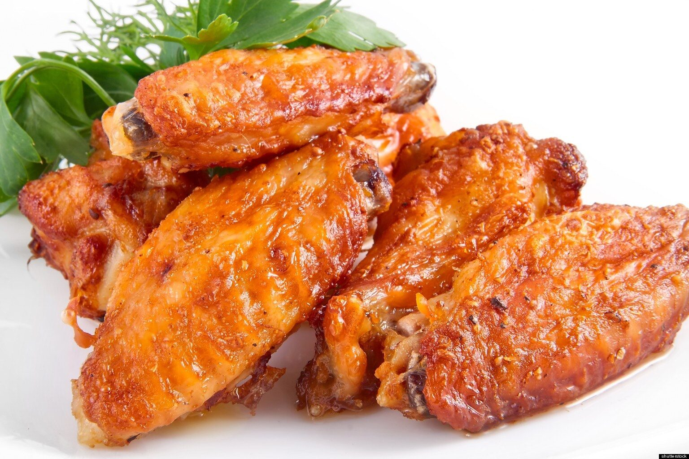

Chicken Wings

Description
This is a garlic-ginger flavoured chicken wings
I went for a clinical test and the nurse recommended it for me,so I spice it up with garlic and ginger
It can be best served with a fried rice dish, a glass cup of a chilled orange,pineapple and strawberry and cucumber juice, you won't regret giving a try,'cause it's yummy
Ingredients
- chicken wings, separated at joint, tips discarded
- cooking spray
- salt and pepper
- water
- garlic and ginger powder
- butter
- hot sauce
- soy sauce
- vegetable oil
- green onions
- flour
Steps
- thaw the wings,if needed
- cut the wings
- bread the wings
- season the wings
- drain the wings
- sauce the wings
- serve it